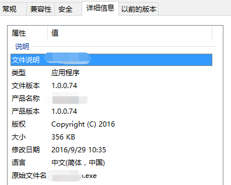

如何给应用程序加版本信息
如果某个想法是你唯一的想法，再也没有比这个更危险的事情了。
右键应用程序的可执行文件，查看详细信息，能够看到应用程序的详细描述，这是怎么加的呢？
创建资源（rc）文件
在Visual Studio 2014中，按照下面顺序：右键项目→Add→Resource，我们就可以在Solution Explorer中看到多了一个resource.h和project.rc文件。project.rc包含了项目的资源信息，包括版本号、icon等。
生成版本信息
目前大多数应用程序的版本号都是4位，前三位手动设置，最后一位根据git提交次数来设置。git计算提交次数的指令如下：
1 | "%git_path%"\git rev-list --count HEAD >> version.h |
上面这句命令会将git提交次数写入到version.h文件的最后面，我们在version.h中只需要#define某个宏，然后不给值，用上面这条命令生成git提交次数。等值生成后，包含version.h就可以使用相应的版本号了。譬如下面：
1 |
将版本信息写入到应用程序详情
在resource.h中包含version.h，按照下面模板填写信息。
1 | // Microsoft Visual C++ generated resource script. |
本文作者：ZeroJiu
本文链接： https://www.freehacker.cn/platform/add-version-info-to-app/
版权声明：本博客所有文章除特别声明外，均采用 CC BY-NC-SA 3.0 CN 许可协议。转载请注明出处！
温馨提示：开启科学上网访问本站，能获得更好的阅读体验，并启用Disqus评论功能和作者交流。